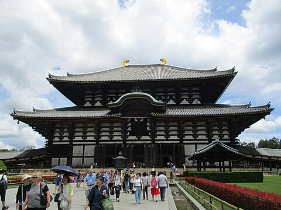

Osaka
About
Osaka (Japanese: 大阪市, Hepburn: Ōsaka-shi, pronounced [oːsakaɕi]; commonly just 大阪, Ōsaka [oːsaka] ⓘ) is a designated city in the Kansai region of Honshu in Japan, and one of the three major cities of Japan (Tokyo-Osaka-Nagoya). It is the capital of and most populous city in Osaka Prefecture, and the third-most populous city in Japan, following the special wards of Tokyo and Yokohama. With a population of 2.7 million in the 2020 census, it is also the largest component of the Keihanshin Metropolitan Area, which is the second-largest metropolitan area in Japan[4] and the 10th-largest urban area in the world with more than 19 million inhabitants.Following the Meiji Restoration, Osaka greatly expanded in size and underwent rapid industrialization. In 1889, Osaka was officially established as a municipality. The construction boom accelerated population growth throughout the following decades, and by the 1900s, Osaka was the industrial hub in the Meiji and Taishō periods. Osaka made noted contributions to redevelopment, urban planning and zoning standards in the postwar period, and the city developed rapidly as one of the major financial centers in the Keihanshin Metropolitan Area.
History
Osaka has a large number of wholesalers and retail shops: 25,228 and 34,707 respectively in 2004, according to the city statistics.[80] Many of them are concentrated in the wards of Chuō (10,468 shops) and Kita (6,335 shops). Types of shops vary from malls to conventional shōtengai shopping arcades, built both above- and underground.[81] Shōtengai are seen across Japan, and Osaka has the longest one in the country.[82] The Tenjinbashi-suji arcade stretches from the road approaching the Tenmangū shrine and continues for 2.6 km (1.6 miles) going north to south. The stores along the arcade include commodities, clothing, and catering outlets. Other shopping areas include Den Den Town, the electronic and manga/anime district, which is comparable to Akihabara; the Umeda district, which has the Hankyu Sanbangai shopping mall and Yodobashi Camera, a huge electrical appliance store that offers a vast range of fashion stores, restaurants, and a Shonen Jump store. Osaka is known for its food, in Japan and abroad. Author Michael Booth and food critic François Simon of Le Figaro have suggested that Osaka is the food capital of the world.[83] Osakans' love for the culinary is made apparent in the old saying "Kyotoites are financially ruined by overspending on clothing, Osakans are ruined by spending on food."[84]
Culture
Tokyo is home to a wide array of museums, art galleries, and libraries, catering to various interests. Ueno Park has the Tokyo National Museum, the country's largest museum specializing in traditional Japanese art,[203] the National Museum of Western Art, whose building designed by Le Corbusier is a world heritage site,[204] and the National Museum of Nature and Science. Ueno Zoo is also located within the park, near the Shinobazu Pond. It is famous for being one of the three zoos in Japan to have giant pandas, with a population of 4 as of May 2024.[205] Other notable museums include the Artizon Museum in Chūō, the National Museum of Emerging Science and Innovation in Odaiba, and the Edo-Tokyo Museum in Sumida, which provides insights into the history and culture of Tokyo. The Edo-Tokyo Open Air Architectural Museum preserves various buildings that have existed throughout the history of Tokyo. The Nezu Museum in Aoyama has a collection of pre-modern Japanese and East Asian art. Located near the Imperial Palace, the National Diet Library, the National Archives, and the National Museum of Modern Art are also notable cultural institutions. Additionally, the Mori Art Museum in Roppongi and the Sumida Hokusai Museum in Sumida ward are notable for their contemporary and ukiyo-e art collections, respectively. The Sompo Museum of Art in Shinjuku is best known for owning one of Gogh's Sunflowers. The Tokyo Metropolitan Garden Art Museum in Minato features the former Tokyo House of Yasuhiko, Prince Asaka, which was built in an opulent Art Deco style in 1933. The Railway Museum, which used to be located in Kanda, has relocated to a larger site in Omiya, Saitama and stores 42 train carriages and locomotives of historical importance.[206] The Tobacco and Salt Museum in Sumida has one of the world's most extensive collections of different types of tobacco and salt. Major aquariums in Tokyo include: Shinagawa Aquarium, Tokyo Sea Life Park, Sunshine Aquarium and Sumida Aquarium.
Architecture
Tokyo's buildings are too diverse to be characterized by any specific archtectural style, but it can be generally said that a majority of extant structures were built in the past a hundred years;[121] twice in recent history has the metropolis been left in ruins: first in the 1923 Great Kantō earthquake and later after extensive firebombing in World War II.[121] The oldest known extant building in Tokyo is Shofukuji in Higashi-Murayama. The current building was constructed in 1407, during the Muromachi period (1336–1573).[122] Although greatly reduced in number by later fires, earthquakes, and air raids, a considerable number of Edo-era buildings survive to this day. The Tokyo Imperial Palace, which was occupied by the Tokugawa Shogunate as Edo Castle during the Edo Period (1603–1868), has many gates and towers dating from that era, although the main palace buildings and the tenshu tower have been lost.[123]